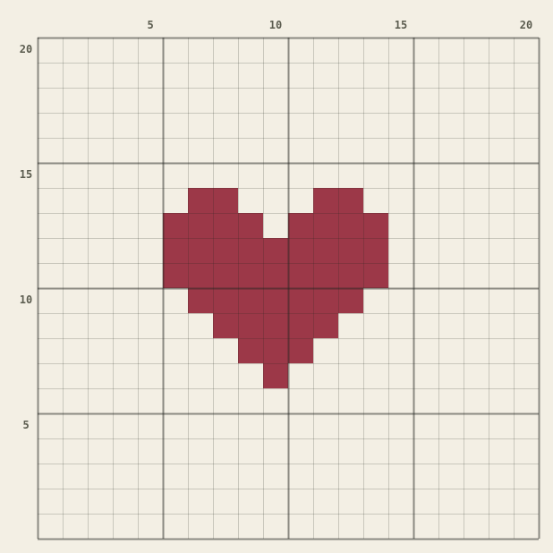
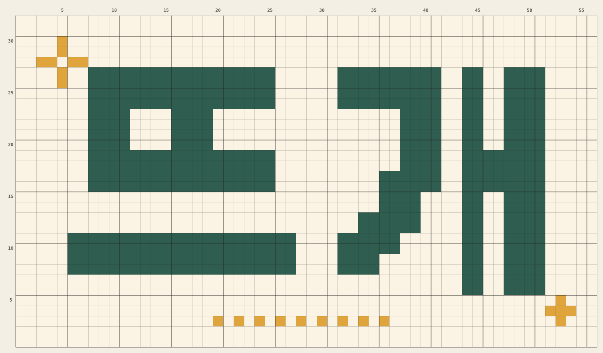
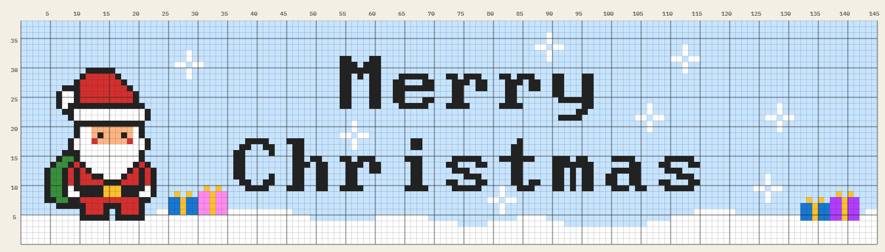

코바늘 배색 도안 만들기
격자에 색을 칠하거나 글자를 넣어 태피스트리 크로셰 도안을 만들 수 있어요. 가입 없이 무료로 쓰고, 만든 도안은 이미지나 파일로 저장할 수 있어요.

도구
도안 만들기
칸을 칠하고, 도트 폰트로 글자를 넣고, 반짝이·하트 같은 장식을 붙여 배색 도안을 만들어요. 물결 같은 글자 흐름과 그림자도 넣을 수 있어요.
열기 →코수 세기
사슬코나 한 단의 코를 버튼 하나로 세요. 목표 코수를 적으면 남은 코가 막대로 보이고, 숫자는 자동으로 저장돼요.
열기 →이런 걸 할 수 있어요
- 문구를 도안으로한글·영문 도트 폰트 18종과 손글씨 글꼴. 글자를 쓰는 대로 캔버스에 바로 미리 보여요.
- 글자 하나씩 배치물결·통통·오르막으로 틀을 잡고, 알파벳을 하나씩 끌어서 다듬어요.
- 장식과 내 장식반짝이·하트·꽃 같은 기본 장식에, 직접 그린 장식도 저장해 두고 써요.
- 뜨면서 보기 편하게작업 단을 테두리로 표시하고, 아래에서부터 1단으로 세요.
- 저장과 공유이미지로 저장하거나, 도안 파일·링크로 남겨 두고 다시 열어 이어 작업해요.
- 휴대폰에서도휴대폰·태블릿·컴퓨터 어디서나 같은 화면으로 써요.
예시 도안
버튼을 누르면 도안 만들기에서 그대로 열려요. 색이나 글자를 바꿔 내 도안으로 만들어 보세요.

가이드
그래프 도안 읽는 법
어디서 시작해 어느 방향으로 뜰까요? 왕복뜨기와 원형뜨기에서 도안을 읽는 순서를 정리했어요.
글씨 도안 크기 정하기
게이지를 재서 원하는 크기에 필요한 코수·단수를 계산하고, 글씨가 들어갈지 확인하는 방법이에요.
자주 묻는 질문
정말 무료인가요? 가입해야 하나요?
네, 모든 기능을 무료로 쓸 수 있고 가입도 필요 없어요. 작업 내용은 내 기기의 브라우저에만 저장돼요.
만든 도안을 판매해도 되나요?
도안은 만든 사람의 것이에요. 도구에 들어 있는 폰트는 모두 상업적 이용이 가능한 무료 폰트라서, 폰트로 만든 글씨 도안을 팔아도 괜찮아요. 다만 캐릭터나 브랜드 로고처럼 다른 사람의 저작물을 담은 도안은 판매하면 안 돼요.
다른 기기에서 이어서 작업할 수 있나요?
도안 만들기에서 저장을 누르면 도안 파일(.json)이 내려받아져요. 다른 기기에서 열기로 그 파일을 열면 그대로 이어서 작업할 수 있어요.
칸 하나가 몇 코인가요?
칸 하나가 짧은뜨기 한 코, 가로 한 줄이 한 단이에요. 실제 크기는 실과 바늘에 따라 달라지니 게이지 재는 법을 참고하세요.